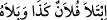
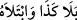

“
(Filanca şunu denedi, sınadı)” denildiğinde, bu söz şu iki şeyi ihtivâ
eder: Birincisi, onun durumunu öğrenmek ve hakkında bilinmeyenlere vâkıf olmak.
İkincisi, iyi veya kötü olduğunun ortaya çıkması. Bu ifâdeyle her ikisi de kastedilebilir,
sâdece birisi de kastedilebilir. Allah Teâlâ hakkında “
” denildiği zaman, bu
ifâdeyle o şeyin durumunu öğrenmek ve hakkında bilinmeyenlere vâkıf olmak değil, o
şeyin iyilik ve kötülüğünün ortaya çıkması murâd edilir. Çünkü Allah gaybları çok iyi
bilendir.
“Ve siz,” ne müstakil ne de ortak olarak bizden başkasına değil “ancak bize
döndürüleceksiniz.” Biz de sizi hayır ve şerden neyiniz bulunursa ona göre söze
karşılık vereceğiz. Bu ifâde hem vaad hem de tehdittir. Bu ifâdede şu îmâ vardır: Dünya
hayatından maksad imtihandır, mükâfât ve cezâya mâruz kalmaktır.
Bil ki amellerin karşılığının verilmesi, mükellefiyet yurdu olan bu dünyada mümkün
olmaz. Bunun için mutlaka sâdece ölümle ve yeniden diriltilme ile kendisine ulaşılacak
başka bir âlem gereklidir. Dolayısıyla her nefsin ölmesi ve yeniden diriltilmesi gerekir.
Bâzıları şöyle demiştir: Rûhun bedenden ayrılmasının faydası, cisimlerle sohbetten
ötürü rûhda oluşan kirlerin kalkmasıdır. Bedene tekrar iâde edilmesinin faydası ise,
Allâh’ın sâlih kulları için hazırlanan hiçbir gözün görmediği, hiçbir kulağın işitmediği
ve hiçbir beşerin gönlünden bile geçmeyen uhrevî nimetlerin elde edilmesidir.
et-Te’vîlâtü’n-Necmiyye’de şöyle der: “Sizi hayırla da, şerle de imtihan ederiz.”
kavli ile işâret edilmektedir ki: Biz sizi “şer” diye isimlendirdiğiniz sevmediğiniz
şeylerle deneriz. Bunlar; korku, açlık, mallardan, canlardan ve ürünlerden azaltmadır
(bk. el-Bakara, 2/155). Bunlarda, nefsin ölümü ve kalbin hayatı sözkonusudur. Yine biz
sizi “hayır” diye isimlendirdiğiz sevdiğiniz şeylerle deneriz. Bunlar da kadınlar,
oğullar, yığın yığın biriktirilmiş altın ve gümüş, salma atlar, sağmal hayvanlar ve
ekinlerdir (bk. Âl-i İmrân, 3/14) Bunlarda nefsin hayâtı ve kalbin ölümü söz konusudur.
İşte bu iki hâl de bir denemedir. Kim, sevmediklerine katlanmakla ve arzularından uzak
durmakla nefsin sıfatlarının ölmesine sabrederse, ona kalbin diriliği ve nefsin itmi’nâna
ermesi müjdesi vardır. Artık onun için lütuf ile “Rabbine dön” emrinin cezbesiyle
Rabbine dönmeyi hak etmek vardır. Nitekim Allah “Ve siz, ancak bize
döndürüleceksiniz.” buyurmuştur. İşte onun şer zannetiği hayıra olur. Nitekim Allah
Teâlâ: “Umulur ki hoşlanmadığınız bir şey hakkınızda hayırlı olabilir.” (el-Bakara,
2/216) buyurmuştur. Kim de hoşlanmadığı şeylere ve nefse hoş gelen şehvetlere
sabretmez ve Allâh’ın haklarına riâyet etmek sûretiyle nimetlere şükretmezse; onun için
nimetlere nankörlük etmekten ötürü şiddetli bir azâb vardır. Onun hayırlı zannettiği
şeyler de kendisi için şer olur. Nitekim Allah Teâlâ: “Umulur ki, hoşlandığınız bir şey
de hakkınızda kötü olabilir.” (el-Bakara, 2/216) İşte böyleleri Allâh’ın huzûruna
zincirlere ve halkalara vurularak kahırla döndürülür.”
Akıllı kişiye gereken, fakirlik ve benzeri nefsin hoşlanmadığı şeylere sabretmektir.
Hâfız der ki: